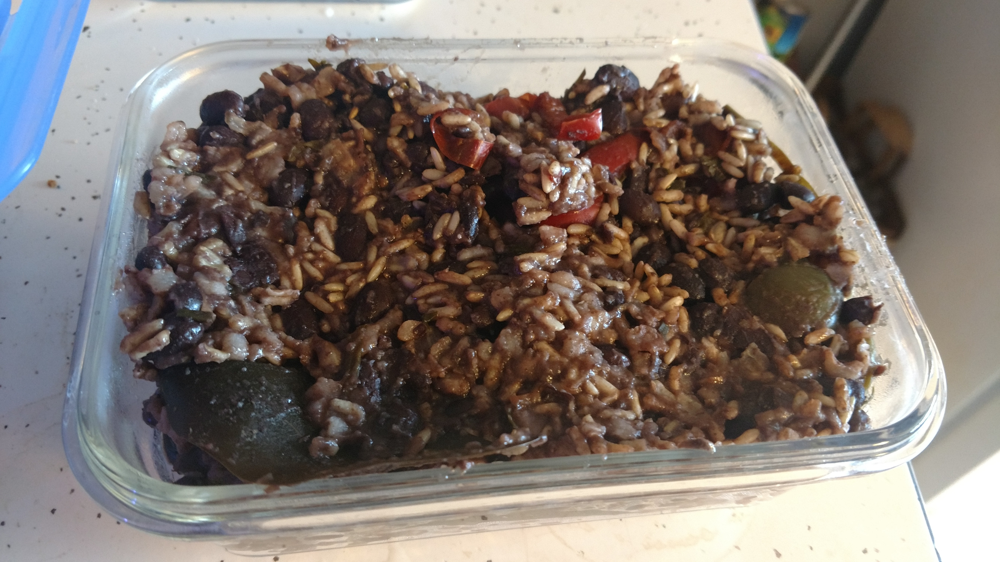
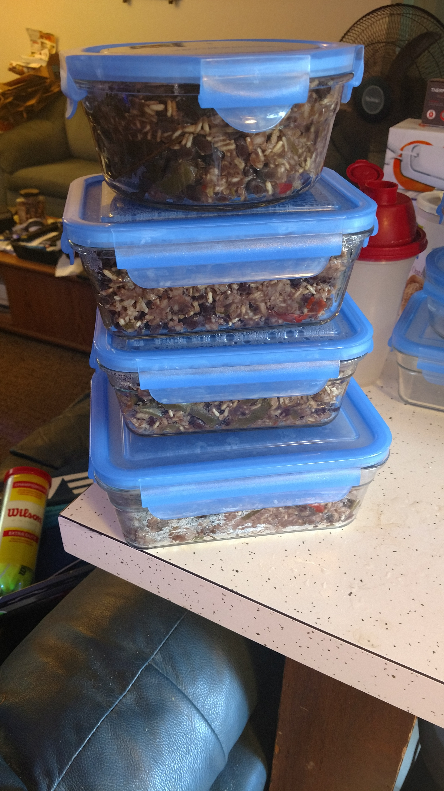

Congri
Cuban style black beans and rice
This dish is a great side to almost every dish and lasts for about 1 week.
Since this is done with raw ingredients, there are two phases to the cooking: make the beans, cook the Congri.
Make Black Beans
In this phase, we cook the black beans in a slow cooker for 6-8 hours, before that chop up the onion and the garlic.
| Name | Amount |
|---|---|
| Dry Black Bean | 1 lb |
| White Onion | 1 whole |
| Garlic | 1 whole |
| Water | 6 cups |
Make Congri
Once the black beans are ready, its time to make the Congri; here we place the rice and the remaining spices into the black beans. My slow cooker has a rice section, so cooked this on "Rice"
| Name | Amount |
|---|---|
| Brown Rice | 1 lb |
| Green Bell Pepper | 1 whole |
| Red Bell Pepper | 1 whole |
| Bay Leaves | 3-4 |
| Cumin | 1/2 tsp |
| Oregano | 1/2 tsp |
| Black Pepper | to taste |
Macros
Serving size is around 45g
| Protein | Carb | Fat |
|---|---|---|
| 5g | 27g | 0.5g |
Results
After everything was done, I had way too much Congri and the rice was not fully cooked. I recommend using 1/2 to 1/4th the amount of food if cooking for 1-2 people.
 